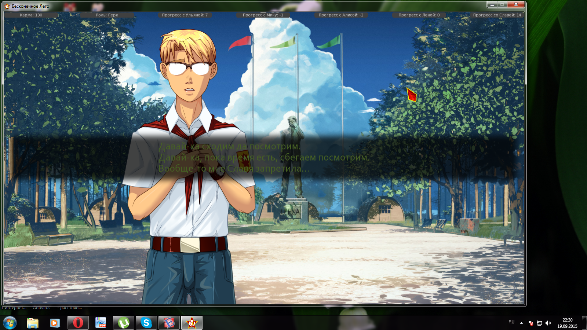

7 дней лета, билд 0.23d (Славя-классик, д.5)
Страница 6 из 11 •  1, 2, 3 ... 5, 6, 7 ... 9, 10, 11
1, 2, 3 ... 5, 6, 7 ... 9, 10, 11
Re: 7 дней лета, билд 0.23d (Славя-классик, д.5)
автор BlackDoomer в Сб 19 Сен 2015 - 21:56
Говорим комплимент на пристани - 1лп (стр. 4739), взамен 1лп если не отпускаешь на остановке.
Представляемся в домике "А я Семён..." - 1лп (стр. 2282) и дальше больше нигде. "Нас там двое было" - вообще в файле нет.
Завтрак отдать ключи - 2 лп. (стр. 7203 - сесть, 7238 - отдать) и всё.
Содержимое скачанного сегодня днём.

BlackDoomer- Хикка

- Сообщения : 165
Дата регистрации : 2015-07-31
Откуда : СПб
Re: 7 дней лета, билд 0.23d (Славя-классик, д.5)
автор Surv в Сб 19 Сен 2015 - 22:11
Щас докачаю билд и проверю.BlackDoomer пишет:А что придумалось в 0.23с, что на ветку Слави (по крайней мере за Герка) стало не выйти? При обычном первом дне идёт пролёт мимо совместного купания на озере при ЛП=8 (ну, не свёл меня рандом с ней в турнире) и дальше вылет на сыча в четвёртом дне. Пропала 1ЛП при напоминании о пляже в начале 2 дня. Не даётся ЛП при согласии на завтраке идти на пляж и судить волейбол. Результат: можно набрать не более 12-13 ЛП.
При альтернативном первом дне пропала добавка ЛП в домике Слави при выборе в стр.2299: "А ты сейчас занята?". Результат - приход на выбор провожатого с ЛП=3 и Славя уже не идёт с нами на обход со всеми вытекающими. Подозреваю, что при альтернативном дне на неё не выдут ни Локи, ни Дрищ.
Surv- Хикка
- Сообщения : 114
Дата регистрации : 2015-06-06
Re: 7 дней лета, билд 0.23d (Славя-классик, д.5)
автор Dantiras в Сб 19 Сен 2015 - 22:21
Проверял 0.23с вчера вечером - выходит на рут с альт дня (но плясать на голове, как Заратуштра завещал, приходится, и на турнире она мне выпала). "Нас там двое было" - це мы с Ульяной в аль дне №1 пошалили и раскаялись. В файле оно зовётся: "Вообще, мы вдвоём там были." (строка 3571).BlackDoomer пишет:"Нас там двое было" - вообще в файле нет.
И да, если уж читаете код - ищите lp_sl +=1 и лишних вопросов не будет.
А товарищу Автору вопрос - в приницпе, на все имеющиеся руты всеми персонажами при любом старте необходимо чтобы можно было попасть? Или есть девиации в таком подходе? И выход на хорошие концовки лп-зависимые тоже необходимо чтобы могли все наши Семёны?

Dantiras- Мизантроп

- Сообщения : 615
Дата регистрации : 2015-08-17
Re: 7 дней лета, билд 0.23d (Славя-классик, д.5)
автор Surv в Сб 19 Сен 2015 - 22:53
Герк альт-д1 = Выход на Славю невозможен,судя по всему не хватает поинтов.Когда выбираем Славю провожатой мы имеем максимум 3 поинта > Славя отказывается.Время тихого часа нету эвента с побегом.За некоторые выборы перестали начислять лп,к примеру дома у Слави доп.лп давалось за вопрос занята или нет.BlackDoomer пишет:Как бы не так.
Говорим комплимент на пристани - 1лп (стр. 4739), взамен 1лп если не отпускаешь на остановке.
Представляемся в домике "А я Семён..." - 1лп (стр. 2282) и дальше больше нигде. "Нас там двое было" - вообще в файле нет.
Завтрак отдать ключи - 2 лп. (стр. 7203 - сесть, 7238 - отдать) и всё.
Содержимое скачанного сегодня днём.
Дрищ обычный д1 = Выход на Славю невозможен,так же выходим на сыча.Опять же за некоторые выборы не дают лп.К примеру во время встречи,когда Славю задерживаешь давался лп.
Ещё заметил отсутствие эвента с купанием,там просто разговор
Последний раз редактировалось: Surv (Сб 19 Сен 2015 - 22:56), всего редактировалось 1 раз(а)
Surv- Хикка
- Сообщения : 114
Дата регистрации : 2015-06-06
Re: 7 дней лета, билд 0.23d (Славя-классик, д.5)
автор Dantiras в Сб 19 Сен 2015 - 22:54
См. Комментарий выше. Выход на рут возможен с любого дня, но при ролле Слави в картах.Surv пишет:
Герк альт-д1 = Выход на Славю невозможен,судя по всему не хватает поинтов.Когда выбираем Славю провожатой мы имеем максимум 3 поинта > Славя отказывается.Время тихого часа нету эвента с побегом.За некоторые выборы перестали начислять лп,к примеру дома у Слави доп.лп давалось за вопрос занята или нет.
Dantiras- Мизантроп
- Сообщения : 615
Дата регистрации : 2015-08-17
Re: 7 дней лета, билд 0.23d (Славя-классик, д.5)
автор Dantiras в Сб 19 Сен 2015 - 23:08
Канон №1. Ответить, Попытаться остановить/Сами ноги к тебе привели! (2 ЛП)
Альт №1. Ясно. А я Семён., Вообще, мы вдвоём там были. (2 ЛП)
№2. Завтрак, отдать ключи, пригласить на обход, площадь, волейбол, волейбол, можем вместе сходить (ролл турнира) (Сумм с д1 - 10 ЛП)
№3. Завтрак, обед, танцульки, согласие на шандарах с крыши (сумм - 14 ЛП)
А Дрищ пока страдает...
P.S. Скромное имхо: рандомайзер не должен влиять на возможность выхода на рут или получение гуд-концовки. Это всего лишь бонусное очко, которое шайтан-рандом-машина нам посылает. Я приветствую идею усложнения жизни игроку до вплоть до практически отсутствия права на ошибку, но без включения элемента случайностей. Хотя жду комментарий тов. Автора на сей счёт.
Dantiras- Мизантроп
- Сообщения : 615
Дата регистрации : 2015-08-17
Re: 7 дней лета, билд 0.23d (Славя-классик, д.5)
автор 7dl-kun в Сб 19 Сен 2015 - 23:26
Ясно. Значит, читаем мы не тем местом, да ещё и по диагонали. Сверну-ка я эту дискуссию как бесплодную.BlackDoomer пишет: "Нас там двое было"
Согласен насчёт рандомайзера.
Снизил порог входа на рут до >=13, для ивента в д.2 лп теперь начисляется в любом случае, но за купание капнет ещё одно бонусное.
Последний раз редактировалось: 7dl-kun (Сб 19 Сен 2015 - 23:36), всего редактировалось 2 раз(а)

7dl-kun- Находка для шпиона

- Сообщения : 3026
Дата регистрации : 2014-09-07
Откуда : здесь столько наркоманов?
Re: 7 дней лета, билд 0.23d (Славя-классик, д.5)
автор Surv в Сб 19 Сен 2015 - 23:28
Набираемый потолок 13 лп.Dantiras пишет:Считалочка ЛП Славяны для выхода на рут (для Герка/Локи)
Канон №1. Ответить, Попытаться остановить/Сами ноги к тебе привели! (2 ЛП)
Альт №1. Ясно. А я Семён., Вообще, мы вдвоём там были. (2 ЛП)
№2. Завтрак, отдать ключи, пригласить на обход, площадь, волейбол, волейбол, можем вместе сходить (ролл турнира) (Сумм с д1 - 10 ЛП)
№3. Завтрак, обед, танцульки, согласие на шандарах с крыши (сумм - 14 ЛП)
А Дрищ пока страдает...
P.S. Скромное имхо: рандомайзер не должен влиять на возможность выхода на рут или получение гуд-концовки. Это всего лишь бонусное очко, которое шайтан-рандом-машина нам посылает. Я приветствую идею усложнения жизни игроку до вплоть до практически отсутствия права на ошибку, но без включения элемента случайностей. Хотя жду комментарий тов. Автора на сей счёт.
Surv- Хикка
- Сообщения : 114
Дата регистрации : 2015-06-06
Re: 7 дней лета, билд 0.23d (Славя-классик, д.5)
автор Дядя Вармог в Сб 19 Сен 2015 - 23:54

Дядя Вармог- Ньюфаг

- Сообщения : 7
Дата регистрации : 2015-06-01
Re: 7 дней лета, билд 0.23d (Славя-классик, д.5)
автор BlackDoomer в Вс 20 Сен 2015 - 0:06
Канон 1 - 2лп
день 2 - завтрак(1), ключи(1), обход(1), волейбол(2), вместе сходим(1) - 8лп (без турнира) и пролёт мимо купания (с его доп. лп) с последующим вылетом на сыча в 4 день.
Аналогично при первом альтернативном.
Затык в том, что к турниру стали приходить с меньшим лп.
BlackDoomer- Хикка
- Сообщения : 165
Дата регистрации : 2015-07-31
Откуда : СПб
Re: 7 дней лета, билд 0.23d (Славя-классик, д.5)
автор Dantiras в Вс 20 Сен 2015 - 0:14
- Народ требует пруфы.:

Читайте, пожалуйста, внимательнее, прежде чем бросаться упрёками в навыках чтения собеседника.
Последний раз редактировалось: Dantiras (Вс 20 Сен 2015 - 0:17), всего редактировалось 1 раз(а)
Dantiras- Мизантроп
- Сообщения : 615
Дата регистрации : 2015-08-17
Re: 7 дней лета, билд 0.23d (Славя-классик, д.5)
автор 7dl-kun в Вс 20 Сен 2015 - 0:16
Второй день - завтрак, ключи, обход, волейбол, площадь, вместе сходим - 9 лп
Вместе идём - 10 (бонус на турнире += 1)
Купание мимо, но за ивент капает 10(12)
Завтрак-обед-первый танец: 13(15). Итого если почитовать с турниром, то можно было выйти и раньше. Теперь можно правой пяткой дойти. Пойду ужесточать порог.
7dl-kun- Находка для шпиона
- Сообщения : 3026
Дата регистрации : 2014-09-07
Откуда : здесь столько наркоманов?
Re: 7 дней лета, билд 0.23d (Славя-классик, д.5)
автор BlackDoomer в Вс 20 Сен 2015 - 0:23
BlackDoomer- Хикка
- Сообщения : 165
Дата регистрации : 2015-07-31
Откуда : СПб
Re: 7 дней лета, билд 0.23d (Славя-классик, д.5)
автор Dantiras в Вс 20 Сен 2015 - 0:26
Читаем внимательно, тов. Думер. Всё ужеBlackDoomer пишет:А потому, что попадание на площадь не логично. Мы идём с бегунком. Для того и провожатого брали, чтобы получить вкусняшки от его присутствия при общении с другими персонажами. Тогда надо задать причину зайти на площадь.
Строки 7609-7622.
- Код:
me "Не хочешь погулять по лагерю? Покажешь новичку где здесь всё?"
if lp_sl >= 4:
$ lp_sl += 1
$ lp_un -= 1
$ lp_dv -= 1
show sl smile pioneer
sl "Конечно!"
"Она взяла меня за руку."
sl "С чего начнём?"
me "А как же твоя помощь? На площади."
"Она улыбнулась."
sl "Ну, если будет время - зайдём, уберёмся."
sl "Ты ведь мне поможешь?."
"Я только головой кивнул."
Dantiras- Мизантроп
- Сообщения : 615
Дата регистрации : 2015-08-17
Re: 7 дней лета, билд 0.23d (Славя-классик, д.5)
автор BlackDoomer в Вс 20 Сен 2015 - 0:30
BlackDoomer- Хикка
- Сообщения : 165
Дата регистрации : 2015-07-31
Откуда : СПб
Re: 7 дней лета, билд 0.23d (Славя-классик, д.5)
автор Arlien в Вс 20 Сен 2015 - 0:31
- оффтопные дифирамбы:
Кумекал над РФ-послесловиями. Накумекал забавную теорию - мол, спектр Семенов со временем то ли цепляет какой-то триггер, то ли переполняет буфер, то ли изнашивает механизм разводки личностей. Покивал с умным видом, плавно съехал с частного к общему, припомнил расставленные альтерации по эндингам, сам альтер-первый день, и тут до меня начало доходить.
Блин, история же на глазах превращается из стандартного статичного лабиринта с сундуками-концовками в живое полотно, развивающееся по мере стратегического прогресса!
Не то что бы и лабиринт был плох - это классика жанра - но так получается вообще совершенно офигенно. Воот.
Arlien- Людовед

- Сообщения : 1322
Дата регистрации : 2014-09-08
Re: 7 дней лета, билд 0.23d (Славя-классик, д.5)
автор Dantiras в Вс 20 Сен 2015 - 0:37
ОК. Т.е. способ получения второго ЛП в альт первом дне Вас не смущает? Оно-то понятно, что Славя отреагировала хорошо на честность, но сам путь к этому ЛП весьма тернист. А зайти на площадь по открытой просьбе девочки, за которой решил приударить, по сравнению с моим примером - абсолютно логично (всего лишь грамотная расстановка приоритетов).BlackDoomer пишет:Проблема в том, что эта прогулка привязана к получению 4-х подписей. Получил - прощай прогулка, топай на обед. Сами себе противоречите, уважаемый: "Ну, если будет время - зайдём, уберёмся". А времени-то нетути. Получил подписи и адью.
Dantiras- Мизантроп
- Сообщения : 615
Дата регистрации : 2015-08-17
Re: 7 дней лета, билд 0.23d (Славя-классик, д.5)
автор Arlien в Вс 20 Сен 2015 - 0:40
Ну да :Д То чувство, когда для сближения с правильной активисткой надо воровать и палиться.путь к этому ЛП весьма тернист
Arlien- Людовед
- Сообщения : 1322
Дата регистрации : 2014-09-08
Re: 7 дней лета, билд 0.23d (Славя-классик, д.5)
автор Dantiras в Вс 20 Сен 2015 - 0:52
Например, после первых двух любых лок (если не посетил площадь) Славя разворачивается и говорит нечто вроде: "Прости, дружище - метла зовёт", чтобы таких вопросов больше не возникало.
Dantiras- Мизантроп
- Сообщения : 615
Дата регистрации : 2015-08-17
Re: 7 дней лета, билд 0.23d (Славя-классик, д.5)
автор BlackDoomer в Вс 20 Сен 2015 - 0:54
В жизни не смущает. Варианты ситуаций, которые развиваются на побочных ветках и дают результат при слиянии веток - в порядке вещей. Для игры - кривовато, но терпимо, ибо там действо развивается через прямой ситуационный выбор: участвовать в шмоне столовки или отказаться. А уж какой вариант выберешь и что получишь - поймёшь по результату. В этой же ситуации нет выбора ни прямого, ни косвенного. Но стоит цель-ограничение. И девочка ни разу не просит зайти на площадь, а совсем наоборот - прямо устанавливает пониженный приоритет действия: "Ну, если будет время - зайдём, уберёмся."Dantiras пишет:ОК. Т.е. способ получения второго ЛП в альт первом дне Вас не смущает? Оно-то логично, что Славя отреагировала хорошо на честность, но сам путь к этому ЛП весьма тернист. А зайти на площадь по открытой просьбе девочки, за которой решил приударить, по сравнению с моим примером - абсолютно логично (всего лишь грамотная расстановка приоритетов).
Почему и говорю, что вернуть эту несчастную единичку лп в какой-либо прямой выбор - для игрового процесса будет лучше.
BlackDoomer- Хикка
- Сообщения : 165
Дата регистрации : 2015-07-31
Откуда : СПб
Re: 7 дней лета, билд 0.23d (Славя-классик, д.5)
автор Dantiras в Вс 20 Сен 2015 - 1:33
Спрайты
№1 sl cry swim спрайт не работает в строке 21625.
- Код:
show sl cry swim at center with dissolve
№2 Строки 21476-21478
- Код:
show sl shy pioneer at center with dissolve
"Я послушно исполнил приказ, всеми силами давя дрожь в пальцах всякий раз, когда они ненароком касались мягкой кожи."
sl "Спасибо! А теперь иди купайся! А я сразу после тебя."
№3 Строки 21668-21692 (далее начало кода)
- Код:
if persistent.sl_cl_good:
show sl scared body with dissolve
"Не удержавшись, я коснулся губами кожи под её ушком."
"Она вздрогнула, судорожно выдохнула и, резко обернувшись, поймала мои губы поцелуем."
"Наверное, я выглядел преглупо, так как она рассмеялась."
Правописание
21727 "Уже облачённая к этому моменту в пионерскую форму на голове тело, Славя только рассмеялась."
Dantiras- Мизантроп
- Сообщения : 615
Дата регистрации : 2015-08-17
Re: 7 дней лета, билд 0.23d (Славя-классик, д.5)
автор Surv в Вс 20 Сен 2015 - 10:14
Теперь купания вообще не будет?7dl-kun пишет:
Купание мимо, но за ивент капает 10(12)
Surv- Хикка
- Сообщения : 114
Дата регистрации : 2015-06-06
Re: 7 дней лета, билд 0.23d (Славя-классик, д.5)
автор 7dl-kun в Вс 20 Сен 2015 - 11:17
7dl-kun- Находка для шпиона
- Сообщения : 3026
Дата регистрации : 2014-09-07
Откуда : здесь столько наркоманов?
Re: 7 дней лета, билд 0.23d (Славя-классик, д.5)
автор Dantiras в Вс 20 Сен 2015 - 12:22
Правописание
2998 sl "Он самые." Они
3012 sl "Про него, родимое. {w}Строят бомбы, потому что боятся бомб и надеются испугать окружающих бомбой побольше. А чтобы пережить тех, кто не напугаюся, лезут под землю." напугается
3183 sl "Посмотри, чтобы выкладка была всё на месте, если где-то дикие звери перевернули или подрыли камень, кладёшь его на место. Всё понятно?" вся
3474 me "Предупреждаю - я буду протестовать! {w}Я только что тяжело трудился, много ходил, меня пугали крысами и я чуть не оставил сандали в той жиже." сандалии
3619 "Ещё раз пересчитав нас по головам, вожатая повернулась и направилась к воротам, чётко печатая шаг - не хватало только горниста и барабанщик для полноты эффекта." барабанщика
3746 "Потому что-то не проблема отнять у детей телефоны до конца смены под ключ в сейф или не раздавать налево-направо вайфай, развесив повсюду таблички «интернета нет, общайтесь друг с другом»." что
4266 sl "Да ничего там особоенного. {w}Просто нужно помнить важный момент: для неё это на всю жизнь." особенного
4252 cs "Я сяду радом с тобой, и трясти тебя будет так же, как десять лет назад." рядом
4273 me "Что-то связанно с первым образом после рождения?" связанное
4325 "Когда я вышел из леса, на небо уже вскарабкалась на луна, прочертившая серебряную дорожку от того берега прямо мне под ноги." "На" не нужно
4410 "Она и в самом деле отвернулась, позволяя меня избавиться от остатков защиты." мне
4417 "Правда, в прошлый раз она загорала и в воду пошла только тогда, когда потребовалась спасать одного придурковатого пионера." потребовалось
Dantiras- Мизантроп
- Сообщения : 615
Дата регистрации : 2015-08-17
Re: 7 дней лета, билд 0.23d (Славя-классик, д.5)
автор Moonshine в Вс 20 Сен 2015 - 13:07
- Спойлер:
- Чет я тоже в замешательстве от новой системы набора очков со Славей в первый день. Теперь вообще никакого простора для маневра нет. И моя излюбленная методика "действуй, как Семен, который только попал не пойми куда" больше вообще не прокатит. Придется действовать максимально эффективно, исключительно как игрок, который знает, что не выполнив условия x,y,z даже на рут не выползешь. Ну да ладно.
И еще. Сейчас начал проходить снова и впервые попалась Славя в финале карточного турнира. Раньше всегда немного раздражала эйфория Семена в случае победы. Но тут настолько ламповая сцена, что раздражение как ветром сдуло. Настолько она отличная получилась. С фразой про влияние Слави и такой подходящей музыкой. Спасибо огромное. Для меня, безусловно, один из лучших моментов в моде.

Moonshine- Маргинал

- Сообщения : 341
Дата регистрации : 2015-05-05
Страница 6 из 11 • 1, 2, 3 ... 5, 6, 7 ... 9, 10, 11